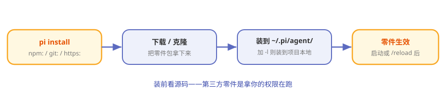

第10章 零件市场：Pi Packages¶
阅读提示 扩展和技能都能自己写，但很多别人已经写好了。本章讲 Pi 的"零件市场"——怎么一条命令把社区的零件装进来。约 7 分钟。
汽配城¶
你想给车加个行车记录仪。两条路：自己买零件自己装（上一章的"自己写扩展"），或者去汽配城，挑个现成的，让师傅几分钟装好。
Pi Packages 就是那个汽配城。别人把扩展、技能打包成"Pi 包"发布出来，你一条命令装进来就能用。
一条命令装零件¶
安装用 pi install，后面跟零件的"出处"：
表10-1 三种出处
| 命令 | 从哪装 |
|---|---|
pi install npm:包名 |
从 npm 装 |
pi install git:仓库地址 |
从 git 仓库装 |
pi install https://… |
从网址装 |
装好后零件就进了 Pi 的发现范围（第 8 章那五个位置之一），启动或 /reload 后生效。

图10-1 pi install：从市场到你的 Pi
装到哪：全局还是项目¶
表10-2 两种安装范围
| 方式 | 装到哪 | 作用域 |
|---|---|---|
| 默认 | ~/.pi/agent/ 下（npm/ 或 git/） |
全局，所有项目可用 |
加 -l |
当前项目本地 | 只这个项目 |
跟扩展的发现位置是一套逻辑：全局的到处生效，项目级的只在这一个项目。
装完之后：list / update / remove¶
零件市场不止"装"这一个动作。Pi 把管理也配齐了：
表10-3 包管理命令
| 命令 | 干什么 |
|---|---|
pi list |
看装了哪些零件 |
pi update |
把装的零件更新到最新 |
pi remove <名字> |
卸载某个零件 |
它们和前面的 pi install 一起，凑成一个零件的完整生命周期：装 → 用 → 更新 → 卸载。
生态长什么样¶
Pi 鼓励大家把自己的扩展/技能打包分享。于是你会看到各种现成零件：
表10-4 社区零件举例
| 类型 | 例子 |
|---|---|
| 能力扩展 | 权限门、git checkpoint、SSH 执行、沙箱 |
| 玩法扩展 | 计划模式、子代理、问答交互 |
| 彩蛋 | 终端贪吃蛇、Doom 覆盖层 |
阅读提示 官方甚至说"让 Pi 自己造扩展"——你造出来觉得好用，就能打包分享给别人。这是"自我扩展"的最后一环：不止自己扩展自己，还能把扩展分享给所有人。
还是那句话：先看源码¶
装第三方零件 = 让别人的代码拿你的权限跑。所以汽配城守则第一条没变：
装之前，先看它干了什么。
项目级零件还有 trust 门禁兜底，全局零件就全靠你自己把关了。
🧪 本章实验¶
实验 10-1 ★｜看懂安装命令 目标：记住三种出处。 步骤：不看表，说出 npm / git / https 三种
pi install写法。 验收：三个全对。实验 10-2 ★★｜浏览一次零件市场 目标：感受生态。 步骤：在 npm 搜 @earendil-works 或社区的 pi 扩展仓库逛一圈。 验收：你能举出两个"想装来试试"的零件。
🤔 思考题¶
- ★ 为什么"打包分发"对 Pi 的生态至关重要？
- ★★ 全局安装和项目级安装（-l），各自适合什么零件？
- ★★ "让 Pi 造扩展再分享给别人"，这让 Pi 和传统插件市场有什么本质不同？
📝 小结¶
- Pi Packages 是零件市场——别人打包，你一条命令装
- pi install 三种出处——npm / git / https
- 全局或项目级（-l）——和扩展发现位置一套逻辑
- 生态自我生长——Pi 造扩展→打包→分享
- 守则第一条——装前看源码
第三部分完。你已经懂了 Pi 最有辨识度的灵魂。最后一部分进阶：Pi 的分身术、它的屏幕是怎么画的，以及动手组装你自己的 Pi。➡️ 第11章 Pi 的分身术：四种模式与 SDK 内嵌